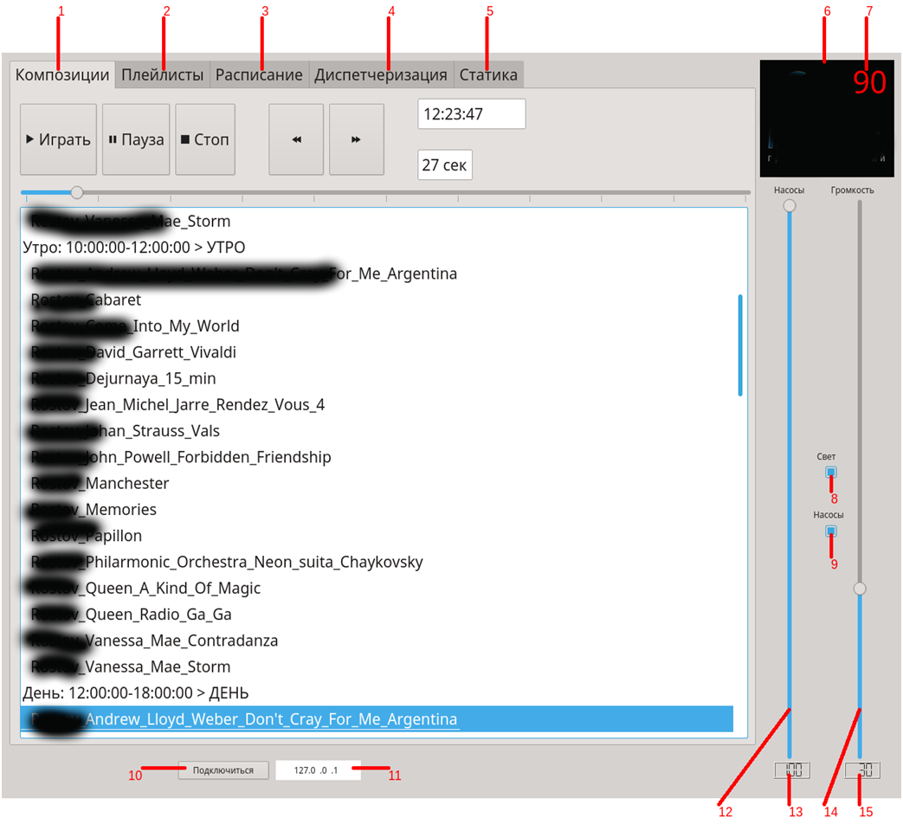

В состав Аппаратно-Программного комплекса управления фонтаном входит специализированное программное обеспечение.
Данное ПО формирует команды управления и последством протоколов MODBUS и DMX управляет работой фонтана. ПО работает под управлением операционной системы LINUX.
Таким образом пользователю не надо заботиться о приобретении отдельной лицензии на серверное ПО, так
как ОС Linux распространяется по лицензии GPL, которая позволяет работать в LINUX "бесплатно".
ПО имеет клиент-серверную архитектуру с открытым протоколом обмена между сервером и клиентом.
Это позволяет сторонным производителям создавать собственные графические оболочки управления фонтаном. Так же это позволяет достигнуть значительной
гибкости в использовании оконечного оборудования.
Пользовательский графический интерфейс выглядит следующим образом:

Главное окно программы управления содержит 5 закладок “Композиции” [1], “Плейлисты” [2], “Расписание” [3],
“Диспетчеризация” [4], “Статика” [5] Ниже приведен общий список
элементов интерфейса:
1. Вкладка “Композиции”
2. Вкладка “Плейлисты”
3. Вкладка “Расписание”
4. Вкладка “Диспетчеризация”
5. Вкладка “Статика”
6. Логотип программы.
7. Индикатор числа оставшихся дней действия ключа программы
8. Флажок включения/выключения света.
9. Флажок включения/выключения насоса.
10. Кнопка подключения к серверу
11. Окно ввода IP-адреса сервера проигрывателя.
12. Ползунок управления общей мощностью насосов
13. Индикатор общей мощности насоса
14. Ползунок управления общей громкостью звука
15. Индикатор общей громкостью звука
Ниже приведено видео работы с графической оболочкой.